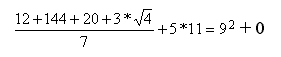

This is my collection of favorite math limericks. I hope you enjoy them. They were found at different times from different places and merely copied in a notebook, so the sources have been lost.
If you have a limerick -- about math, of course -- that is not found below, please send it to me via e-mail. I will include it on this page, giving you credit for the submission, naturally. :-)
1. An algebra teacher named Drew Tried to find the . He found it between 1/4 and 14, But couldn't get closer. Can you? 2. There was an old man who said, "Do Tell me how I should add two and two. I think more and more That it makes about four -- But I fear that is almost too few." 3. There was a young lady called Kate, Whose maths was right up-to-date. She said, "It is fun When three 3's are one -- Which they are with modulo 8." 4. Little Jack Horner sat in a corner, Trying to evaluate . He disclaimed rule of thumb, Found an infinite sum, And exclaimed "It's REAL, nary an i." 5. A mathematician named Ray Says extraction of roots is child's play. You don't need equations Or long calculations; Just hot water to run on the tray. 6. Said Mrs. Isosceles Tri, "That I'm sharp I've no wish to deny; But I do not dare To be perfectly square -- I'm sure if I did I should die!" 7. An arithmetic teacher named Jones Was reduced by the new math to groans, And shortly expired. Since he has not retired, He now serves as Napier's Bones. 8. A mathematician confided That a Moebius band is one-sided. And you'll get quite a laugh If you cut one in half, For it stays in one piece when divided. 9. A graduate student at Trinity Computed the square of infinity. But it gave him the fidgets To put down the digits, So he dropped math and took up divinity. 10. A mathematician from Boole, Used to mispronounce words like a fool. He spoke of "stastistics", And "intragel" ballistics, "Yuler" circles and "Hospital's" rule. 11. There was a young student from Rye, Who worked out the value of . "It happens," said he, "That it's just over 3, Though I'd rather you don't ask me why." 12. There was a young student from Crewe Who learned how to count in base 2. His sums were all done With 0 and 1, And he found it much simpler to do. 13. There was a young fellow called Dan, Who knew all about sin, cos and tan. He talked rather big Of his knowledge of trig -- He did seem a clever young man. 14. A mondern young lady called Rita, Buys ribbons and cloth by the metre. She gets bacon and ham Weighed out by the gram, And orders her milk by the litre. 15. There was a maths student called Hector, Who couldn't tell scalar from vector. "I'm quite at a loss To tell a dot from a cross -- I ought not to work in this sector." 16. If inside a circle a line Hits the center and goes from spine to spine And the line's length is "d", The circumference will be d times 3.14159. 17. A Dozen, a Gross, and a Score, plus three times the square root of four, divided by seven, plus five times eleven, equals nine squared and not a bit more. -- Jon Saxton 18. 'Tis a favorite project of mine A new value of pi to assign. I would fix it at 3 For it's simpler, you see, Than 3 point 1 4 1 5 9. -- Harvey L. Carter 19. There was a young man named Floogle, Who tried to count up to a googol. But it took such a long time That one day he cried, "I'm Now known as the Old Man Floogle. -- Terry Trotter 20. There once was a woman from Dundee, Whose age had last digit three. If her whole age reversed Is the square of the first (digit), Then what must the woman's age be? -- (Contributed by Pat Vennebush, MATHCOUNTS Program) 21. My Poem by Eve Andersson There once was a number named pi Who frequently liked to get high. All he did every day Was sit in his room and play With his imaginary friend named i. There once was a number named e Who took way too much LSD. She thought she was great. But that fact we must debate; We know she wasn't greater than 3. There once was a log named Ln Whose life was devoted to sin. She came from a tree Whose base was shaped like an e. She's the most natural log I've seen. Eve Andersson (sweetie_pi@eveander.com) 22. A Pi Lymeric There once was a number Pi Very special like e and phi Circumference to d Is the ratio for me And it's not a multiple of i ---Liz Landau Visit Liz's great website about Pi. 23. There was a Young Lady from Bath, In love she was -and deeply- with Math; She married a Fraction, But died of Subtraction, That algebraic Young Lady from Bath. --Paolo Trabucchi 24. A "cubit" in old Pharoah's land Was TWENTY-EIGHT "digits", and spanned From elbow to finger Does this measure linger? No, it's too crude, it's been canned --Andy Stanton 25. A limerick in honor of mathematician Paul Erdös (rhymes with Kurdish) A conjecture both deep and profound Is whether the circle is round. In a paper of Erdös Written in Kurdish A counterexample is found. 26. There was a young lady named Bright whose speed was much greater than light. So she set out one day, In a relative way And returned on the previous night. (Contributed by Philip Hunt) 27. The system which we use is decimal, But the ancient Mayans used vigesimal. Base TWENTY, not ten Was what suited them then. Tell that to your friends and impress 'em all! ---A. Stanton 28. The "long hundred" once signified plenty: It meant more than the standard "short" century Base TWELVE was the count Which increased the amount; TWELVE times ten gives one hundred and twenty ---A. Stanton 29. Integral z-squared dz from 1 to the cube root of 3 times the cosine of three pi over 9 equals log of the cube root of 'e'. ---Betsy Devine and Joel E. Cohen in Absolute Zero Gravity, Simon and Schuster, 1992, p.37. 30. Archimedes, the well known truth-seeker, Jumping out of his bath, cried, "Eureka!" He ran half a mile, Wearing only a smile, And became the very first streaker. --found on the internet 31. There once was a student in school, Who couldn't do math as a rule, He worked at it a lot, Till each answer he got, And now he's no longer a fool. --Meryl Altabet 32, When you cut Apollonius' cone There's a circle, but it's not alone. A parabola, new, A hyperbola, too, And a perfect ellipse will be shown. ---found in The Gnarly Gnews, by Montgomery Phister, Jr.
While this next poem is not a limerick, it nonetheless is one of my personal favorites. So I will present it here.
Fiddle de dum, fiddle de dee, A ring around the moon is times d; But if a hole you want repaired, You use the formula r2.Here's another non-limerick poem, but still a clever example of math ideas presented poetically.
Little Miss Bottenoose
Squared the
hypotenuse,
certain that she would
gain fame.
Each leg did she square,
Then she added the pair
And cried out "The
results are the
same!"
--Middle School Mathematics, Prentiss Hall, Book 3, p. 138.
Try this one out...
"Cosine, secant, tangent, sine
3.14159
Integral, radical, u dv,
slipstick, slide rule,
MIT!"
--Massachusetts Institute of Technology football cheer
| Comments? Send e-mail. | Back to top | Go back to Home Page | Go back to Contents |